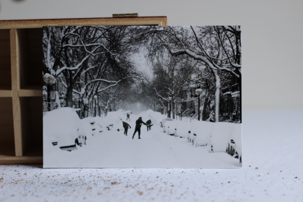
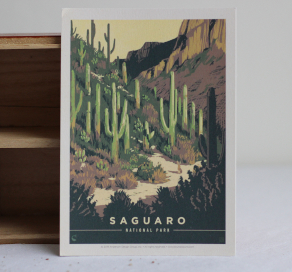

current state of the market
For this first round of Escarcelle, the market will be restricted to postcards.
- one postcard will be about the past: the sea
- one postcard will be about the future: a short winter
- one postcard will be about making things up: saguaro 1
- one postcard to stay on topic: climbing
- one postcard to lose control: saguaro 2
the sea
Linked souvenir: Memories of a man who would visit his wife during the war, leave her with a new kid on the way and return to his ship in the Pacific. So many questions I would have asked them if I'd understood things in time..
Identification number: 01a
a short winter

Linked souvenir: A winter so short no one changes their tires anymore. The last shoveling business went bankrupt. Yesterday, I was trying to remember the sound made when walking on fresh snow after a storm.
Identification number: 00b
saguaro 1

Linked souvenir: I went to the desert to be away from the snow and to do some climbing. It rained, the climbing plans fell through... And then the blooming cacti miracle happened. --- Yannick (original in French, translation by the market)
Identification number: 01c
climbing

Linked souvenir: My first fall in traditional climbing: I was pretty sure I was about to die during the quarter of a second that it lasted. Fortunately, the camalot worked. What an adventure! --- Yannick (original in French, translation by the market)
Identification number: 00d
saguaro 2

Linked souvenir: I was in the desert, looking carefully at how nothing was moving. I did not notice that time was flying by. When I finally woke up from my meditation, I had quite the sunburn! --- Yannick (original in French, translation by the market)
Identification number: 00e
reserved cards
The following postal cards are already reserved and not currently available.
[March 10th, 2022] : there are currently no reserved card.
contact
For more information on the project, contact the artist at escarcelle@finartcialist.com.
To see all finartcialist projects, please go to the website finartcialist.com.